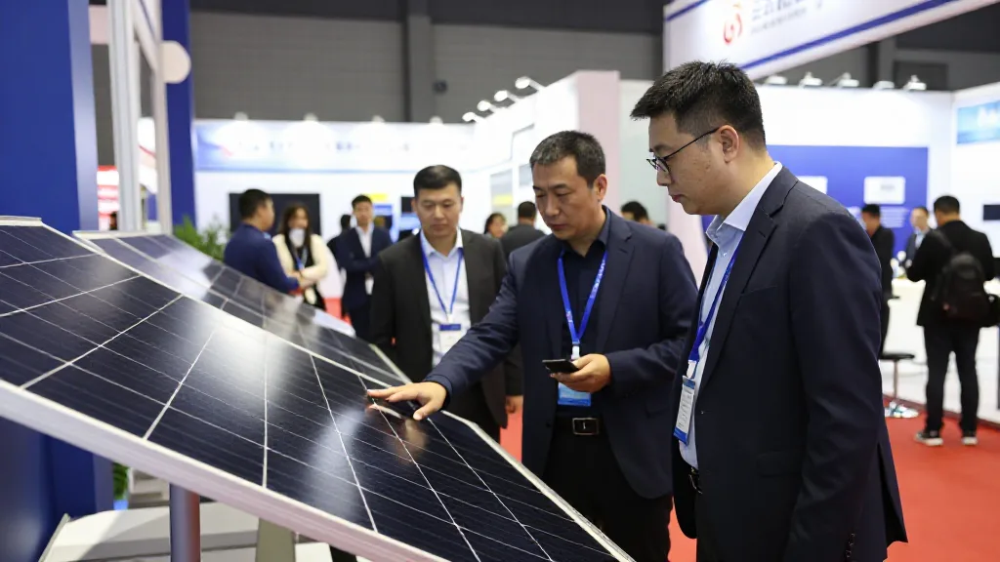
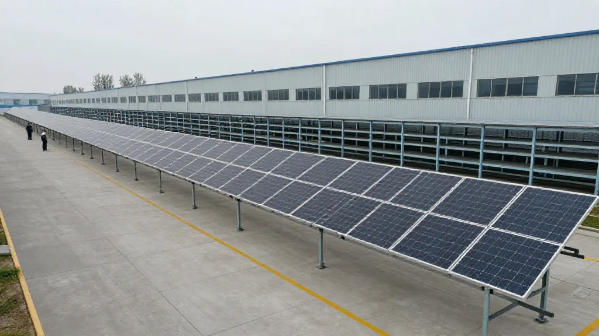
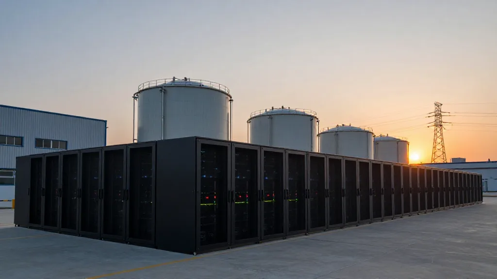
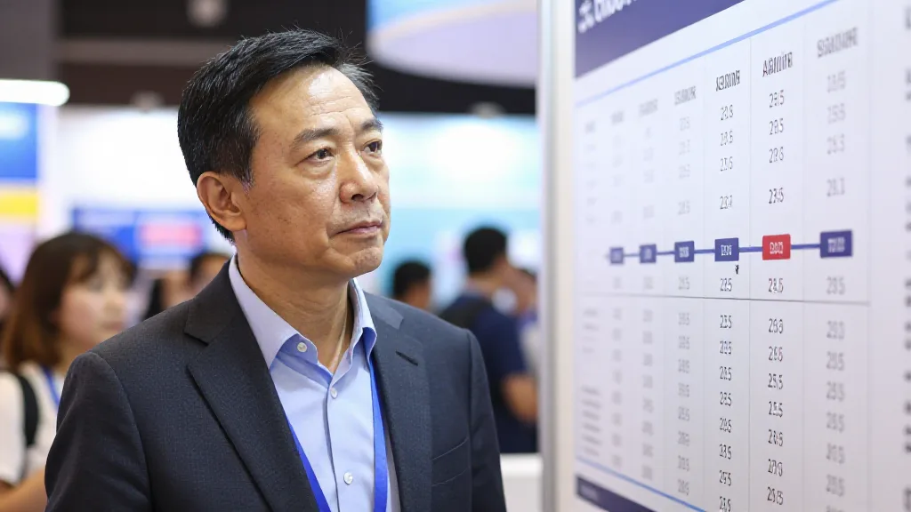

今日个朋友去咗第18届世界太阳能光伏暨储能产业博览会（PV Guangzhou 2026），返嚟话我：「展会好大，但感觉人好少。」
我即刻追问数据——答案好清晰：国内上半年装机86.2GW（同比-61%），主产业链连续11个季度亏损，板块净利润-104.76亿元，展会规模18万平、2000几展商，官方话首日13万人次。
官方数据加现场观感，两个信号都指向同一个结论：光伏行业，2026年进入深度调整期。

圖片由 AI輔助創作（Z-Image-Turbo）
一、朋友嘅「人少」其实系5个信号
信号1：人流减少
行业冷清嘅直接证据，国内市场萎缩，参展商质素参差。唔系错觉，系数据撑住嘅现实。
信号2：海外买家多
国内市场萎缩，参展商转向出口，重点对接国际买家，唔再吸国内散客。国内过剩，海外先系出路。
信号3：展位冷清
部分参展商预算紧，展位设计简化，销售人员减少。肯使钱嘅少咗，睇得出成行收紧水喉。

圖片由 AI輔助創作（Z-Image-Turbo）
信号4：行业共识改变
2026上半年净亏损104.76亿，连续11个季度亏损，「反内卷」政策推动出清。以前系拼规模，而家系拼边个活得落去。
信号5：2027年缺货高峰
内存涨价5到7倍，电力供应成瓶颈，储能加AI先系下一个风口。光伏落，储能起，呢个切换好关键。
二、对AI算力嘅连锁影响
光伏看似同AI算力无关，但其实三条线扣得好紧。第一，电力瓶颈：太阳能系AI数据中心电力来源之一，光伏萎缩，电力更紧张，算力电力成本继续升。第二，储能机会：光伏落、储能起，储能加AI数据中心系黄金组合。第三，出口转移：国内产能过剩，欧美同东南亚需求增长，跨境电商有机会。

圖片由 AI輔助創作（Z-Image-Turbo）
三、对鄭哥业务嘅具体影响
AI算力方面，电力成本上升推高服务器总成本5到10%，选址要转去电力充足地区，储能结合系机会。跨境电商方面，光伏产品出口、优质供应商集中，选品更清晰。年轻人投资方面，避开光伏制造端同落后产能，关注储能加AI、新技术同海外市场。

圖片由 AI輔助創作（Z-Image-Turbo）
四、70后嘅行业观察哲学
我哋呢代做贸易26年，见过太多周期：2003年SARS口罩短期暴涨长期过剩，2008年金融危机复苏慢淘汰快，2011年日本地震电子元件短期涨3倍，2020年疫情IC短缺涨5倍，2026年光伏加AI进入底部出清期。
每一次行业底部，都系重新分配嘅机会：优质企业活下来提升份额，新进入者搵到差异化，跨界融合创造新蓝海。
五、海哥嘅建议
对投资者：短期一年避开光伏制造端，中期三年睇储能加AI算力，长期五年以上睇新能源加新技术。对从业者：由光伏制造转向储能加AI，由低端转向高端加出口，同优质企业抱团。对朋友：展会观感加行业数据双重视角，短期唔好急住投资，中期睇储能，长期睇新技术。呢个时代，识得避开风险，比识得抓住机会更重要。
朋友嘅「人少」观感，唔系错觉，系行业嘅真实信号。光伏2026年进入深度调整期，但每一次调整都系重新分配嘅机会。储能加AI嘅交叉点，就系下一个10年最大机会。我哋呢代70后，由电子产品到AI算力，见证紧每一个转折。你呢，准备好未？
合作联系 WhatsApp: +852 6641 7912 · 七善門科技 · 星辰算力
本文参考：央广网9月17日报道、CFM闪存市场、国家「反内卷」政策、PV Guangzhou 2026展会数据。